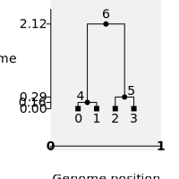
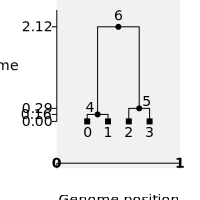

Randomness and replication¶
Simulations are used to generate random samples from complex distributions, which we usually don’t have analytical solutions for. In this section we describe how msprime generates and controls randomness, and also how to efficiently and idiomatically run many replicate simulations to summarise those distributions.
Random seeds¶
Stochastic simulations depend on a source of randomness, provided by a psuedorandom number generator. Msprime uses the GNU Scientific Library to generate high-quality random numbers. The particular trajectory produced by a pseudorandom number generator is controlled by the “seed” it is provided.
Note
By default, msprime generates random seeds using a private instance of
random.Random, which should guarantee unique seeds are produced
even if (e.g.) many simulations are started at the same time in different
processes. In particular, simulations run concurrently in subprocesses using
concurrent.futures or multiprocessing will be assigned unique
seeds by default. See the Running in parallel section
for more information and examples.
Thus, if we run two ancestry simulations with the same parameters, we will get different results:
from IPython.display import display, SVG
ts1 = msprime.sim_ancestry(2)
ts2 = msprime.sim_ancestry(2)
display(SVG(ts1.draw_svg(y_axis=True)), SVG(ts2.draw_svg(y_axis=True)))
The random_seed argument to sim_ancestry() allows us specify
seeds explicitly, making the output of the simulation fully deterministic:
ts1 = msprime.sim_ancestry(2, random_seed=42)
ts2 = msprime.sim_ancestry(2, random_seed=42)
display(SVG(ts1.draw_svg(y_axis=True)), SVG(ts2.draw_svg(y_axis=True)))
 
Similarly, if we run two different mutation simulations on the same ancestry, we’ll get different sets of mutations (and, therefore, genome sequences):
ts = msprime.sim_ancestry(2, sequence_length=10, random_seed=42)
mts1 = msprime.sim_mutations(ts, rate=0.1)
mts2 = msprime.sim_mutations(ts, rate=0.1)
display(SVG(mts1.draw_svg(y_axis=True)), SVG(mts2.draw_svg(y_axis=True)))
We can see that mutations occur at different positions along the genome,
and also on different branches of the trees. If we provide
the random_seed argument to sim_mutations(), we will get
precisely the same result in both simulations:
ts = msprime.sim_ancestry(2, sequence_length=10, random_seed=42)
mts1 = msprime.sim_mutations(ts, rate=0.1, random_seed=666)
mts2 = msprime.sim_mutations(ts, rate=0.1, random_seed=666)
display(SVG(mts1.draw_svg(y_axis=True)), SVG(mts2.draw_svg(y_axis=True)))

Running replicate simulations¶
Simulations are random, and we will therefore usually want to have many independent replicates for a particular set of parameters. In this section we provide some examples of how to efficiently run replicate simulations in msprime.
Ancestry simulations¶
When performing ancestry simulations with
sim_ancestry(), the num_replicates parameter provides a
convenient and efficient
way to iterate over a number of replicate simulations. For example,
suppose we wish to examine the distribution of the
time to the most recent common ancestor.
import numpy as np
num_replicates = 100
tmrca = np.zeros(num_replicates)
replicates = msprime.sim_ancestry(10, num_replicates=num_replicates, random_seed=42)
for replicate_index, ts in enumerate(replicates):
tree = ts.first()
tmrca[replicate_index] = tree.time(tree.root)
np.mean(tmrca), np.var(tmrca)
(3.799291711240622, 3.920289255957004)
Tip
Using the num_replicates argument like this can be substantially
more efficient that running simulations independently for
small simulations.
It’s important to note that the replicate simulations are generated
lazily here on demand—the replicates variable is a Python iterator,
and we use the built-in enumerate() function to easily get
the index of each replicate in the list. Thus, no simulation
is actually done when we call sim_ancestry here, it’s just setting
up the underlying state. Each replicate simulation is done sequentially
as we go through the loop. We therefore only use the memory that
we need to represent the results of one simulation.
Warning
It’s a bad idea to store the result of sim_ancestry in a list like
this:
replicates = list(msprime.sim_ancestry(10, num_replicates=100))
Unlike the efficient example above, this will run all 100 simulations before returning and store the resulting tree sequences in memory. This consumes approximately 100X more memory that the example above!
Note
The return type of sim_ancestry() changes when we use the
num_replicates argument. If num_replicates is not specified
or None, we return an instance of tskit.TreeSequence.
If it is specified, we return an iterator over
a set of tskit.TreeSequence instances.
Adding mutations¶
Things are a little more involved when we also want to simulate
mutations on the simulated ancestries, because we cannot get a
stream of replicate results directly from sim_ancestry().
In this section we a number of different and idiomatic ways to
efficiently combine ancestry and mutation simulations.
See also
It is often assumed that mutations are a necessary part of simulating population genetic processes, but this is often not the case. See the tutorial on this topic for more information.
Using a generator¶
In this example we define a “generator” function that runs a set of replicate ancestry simulations, simulates mutations on them, and sequentially yields the resulting tree sequence to the calling code:
def sim_replicates(sample_size, num_replicates):
ancestry_reps = msprime.sim_ancestry(
samples=sample_size,
population_size=100, sequence_length=1_000,
num_replicates=num_replicates)
for ts in ancestry_reps:
mutated_ts = msprime.sim_mutations(ts, rate=1e-6)
yield mutated_ts
In general it’s a good idea to encapsulate specific simulations
in a function like this: an free parameters (like sample_size here)
can be passed in as parameters to the function, and any fixed values
(like e.g., sequence_length) can be specified in one place,
avoiding repetition and potential for mistakes. Having defined the
generator function, we can now run it for a given number of
replicates and sample size. In this example, we com
compute the number of
segregating sites
in each replicate tree sequence, and store the values in a numpy
array:
num_replicates = 100
S = np.zeros(num_replicates)
for replicate_index, ts in enumerate(sim_replicates(10, num_replicates)):
S[replicate_index] = ts.segregating_sites(span_normalise=False, mode="site")
# Show the mean and variance of S
(np.mean(S), np.var(S))
(1.52, 1.5495999999999999)
Again, this approach means that we only have the tree sequence for one replicate simulation in memory at one time.
Using functional tools¶
Another way in which we can efficiently apply mutations to replicate simulations is using Python’s functional programming tools:
import functools
num_replicates = 100
S = np.zeros(num_replicates)
ancestry_reps = msprime.sim_ancestry(
samples=10,
population_size=100,
sequence_length=1_000,
num_replicates=num_replicates)
mutations_func = functools.partial(msprime.sim_mutations, rate=1e-6)
mutations_reps = map(mutations_func, ancestry_reps)
for replicate_index, ts in enumerate(mutations_reps):
S[replicate_index] = ts.segregating_sites(span_normalise=False, mode="site")
(np.mean(S), np.var(S))
(1.47, 2.0691)
In this example we use Python’s map() function to iteratively
apply the sim_mutations() function to the output of
sim_ancestry(). Because map only expects a single argument
and we also need to specify the rate value,
we need to create a “partial” function which sets the mutation rate
(and any other parameters we might like to provide) for sim_mutations().
This could equally be done using a
lambda expression
or indeed by defining a function in the usual way using def.
Warning
Do not set the random seed to a fixed value in partial function like this! This would result in different random ancestry replicates being correctly generated but all mutations being thrown down using the same seed. This would lead to nasty bugs!
Specifying seeds explicitly¶
When we’re running large simulations it’s usually better to specify the
seeds explicitly and run ancestry simulations individually. First
we define a function that takes our free parameters (num_samples
in this case) and random seed values for the ancestry and
mutation simulations:
def run_sim(num_samples, ancestry_seed, mutation_seed):
ancestry_ts = msprime.sim_ancestry(
samples=num_samples,
population_size=100,
sequence_length=1_000,
random_seed=ancestry_seed)
mutated_ts = msprime.sim_mutations(
ancestry_ts, rate=1e-6, random_seed=mutation_seed)
return mutated_ts
Note
Note that this function is not a generator—it returns a single tree sequence, rather than an iterator over replicate tree sequences.
Having defined this function, we can then generate some random seeds using numpy (note that we seed the random generator to make the seeds themselves deterministic—otherwise, we might as well let msprime generate random seeds):
num_replicates = 100
rng = np.random.RandomState(42)
seeds = rng.randint(1, 2**31, size=(num_replicates, 2))
S = np.zeros(num_replicates)
for replicate_index in range(num_replicates):
ts = run_sim(10, *seeds[replicate_index])
S[replicate_index] = ts.segregating_sites(span_normalise=False, mode="site")
(np.mean(S), np.var(S))
(1.28, 1.1016)
Running in parallel¶
When we are running replicates of large simulations we will usually
want to take advantage of the available CPU cores and run them
in parallel. Since replicates are independent, this is quite easy
to do using Python’s concurrent.futures module.
When running simulations in parallel it’s important to create a simple function that runs your simulation in the worker processes. First we define this function:
import concurrent.futures
def worker(seeds):
ancestry_seed, mutation_seed = seeds
ts = msprime.sim_ancestry(
samples=10,
population_size=100,
sequence_length=1_000,
random_seed=ancestry_seed)
ts = msprime.sim_mutations(ts, rate=1e-6, random_seed=mutation_seed)
return ts.segregating_sites(span_normalise=False, mode="site")
Note that this is almost the same as the function we defined in the Specifying seeds explicitly section, with a few differences:
The
workerfunction takes one parameter,seeds, which we unpack manually into theancestry_seedandmutation_seed.We have no free parameters, as it is much simpler to fully specify the worker function than it is to use partial functions in the context of multiple processes.
We return the final result that we are interested (the segregating sites value) in rather than the simulated tree sequence. There are two good reasons for this: (a) we want to do as much computation as we can in the worker process and as little as possible in the main process; and (b) we want to keep the values that we return from the worker process as small and simple as we can to avoid serialisation overhead.
Once we’ve defined the function, then we can generate some
random seeds as before, and then use the
map method of ProcessPoolExecutor
to distribute the work among all available CPU cores:
num_replicates = 100
rng = np.random.RandomState(42)
seeds = rng.randint(1, 2**31, size=(num_replicates, 2))
with concurrent.futures.ProcessPoolExecutor() as executor:
results = executor.map(worker, seeds)
S = np.array(list(results))
(np.mean(S), np.var(S))
(1.28, 1.1016)
Note
This approach is a good pattern to use when running replicates of large simulations, requiring at least (say) 10 seconds to run. It will not be efficient as a way of running large numbers of small simulations, though.